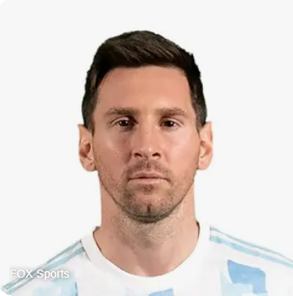

Resume of Messi

About:
Lionel Messi, born on June 24, 1987, in Rosario, Argentina, is widely regarded as one of the greatest footballers of all time. His journey from a young boy with a passion for football to a global icon is a story of talent, hard work, and determination.
Early Life and Career:
Messi began playing football as a young child and joined the local club Newell's Old Boys. His prodigious talent was evident from a very early age. However, at the age of 11, Messi was diagnosed with a growth hormone deficiency, a condition that required expensive medical treatment. Recognizing his potential, FC Barcelona offered to pay for his medical treatment, and Messi moved to Spain with his family to join the club's famed youth academy, La Masia.
Barcelona Legend:
Messi made his first-team debut for Barcelona in 2004, at just 17 years old. Over the next 17 years, he shattered numerous records and won countless titles with the club. He became Barcelona's all-time leading scorer and helped the team secure numerous La Liga titles, Copa del Rey trophies, and UEFA Champions League victories. His individual accolades include multiple Ballon d'Or awards, recognizing him as the world's best player.

Career:
Lionel Messi has had a remarkable professional football career, marked by his long tenure at FC Barcelona, his move to Paris Saint-Germain (PSG), and his contributions to the Argentina national team. Below is an overview of his work experience:
FC Barcelona (2000-2021)
Youth Academy (2000-2003)
- La Massia: Messi joined Barcelona's youth academy, La Masia, at age 13. Here, he developed his skills and quickly rose through the ranks.
Senior Team Debut and Early Years (2003-2008)
- Debut: Messi made his official debut for Barcelona’s senior team on November 16, 2003, in a friendly match against Porto.
- First Goal: Scored his first senior goal for Barcelona on May 1, 2005, against Albacete.
- Breakthrough: Established himself as a first-team regular during the 2005-2006 season, helping Barcelona win the La Liga and the UEFA Champions League.
Paris Saint-Germain (2021-23)
- Transfer: Joined Paris Saint-Germain in August 2021 after leaving Barcelona due to the club's financial constraints.
- Debut: Made his PSG debut on August 29, 2021, in a Ligue 1 match against Reims.
- Contributions: Continues to be a key player for PSG, contributing with goals, assists, and his vast experience. Helped PSG secure domestic titles and is pivotal in their pursuit of UEFA Champions League success.
Inter Miami CF (2023-Present)
Skills:
- Dribling ⭐️⭐️⭐️⭐️⭐️
- Passing ⭐️⭐️⭐️⭐️⭐️
- Goal Scoring ⭐️⭐️⭐️⭐️⭐️
- Free Kicks ⭐️⭐️⭐️⭐️⭐️
- Penalty ⭐️⭐️⭐️⭐️⭐️
- Ball control ⭐️⭐️⭐️⭐️⭐️
- Speed ⭐️⭐️⭐️⭐️
- Acceleration ⭐️⭐️⭐️⭐️
Achievements:
Lionel Messi trophies with Argentina
- FIFA World Cup- 2022
- Finalissima-2022
- Copa AMerica-2021
- Olympic Gold Medal -2008
- FIFA Under-20 World Cup-2005
With Barcelona:
- La Liga (10)-2004/05, 2005/06, 2008/09, 2009/10, 2010/11, 2012/13, 2014/15, 2015/16, 2017/18, 2018/19
- Copa del Rey (7)- 2008/09, 2011/12, 2014/15, 2015/16, 2016/17, 2017/18, 2020/21
- Supercopa de Espana(7)- 2006, 2009, 2010, 2011, 2013, 2016, 2018
- UEFA Champions League (4)- 2005/06, 2008/09, 2010/11, 2014/15
- UEFA Super Cup (3)- 2009, 2011, 2015
- FIFA Club World Cup(3)-2009, 2011, 2015
With PSG:
- Ligue 1- 2021-22
- Trophee des Champions- 2022
Individual Honors:
- Ballon d'Or (8)- 2009, 2010, 2011, 2012, 2015, 2019, 2021,2023
- FIFA World Cup Golden Ball (2)- 2014, 2022
- Argentina Player of the Year(14)-2005, 2007-2013, 2015-2017, 2019-2021
- La Liga Player of the Year (6)- 2008/09, 2009/10, 2010/11, 2011/12, 2012/13, 2014/15
- La Liga top scorer (8)- 2009/10, 2011/12, 2012/13, 2016/17, 2017/18, 2018/19, 2019/20, 2020/21
- European Golden Boot (6)- 2009/10, 2011/12, 2012/13, 2016/17, 2017/18, 2018/19
- FIFA World Player of the Year- 2009
- FIFA The Best Award- 2019, 2023
- FIFA Club World Cup Golden Ball (2)- 2009, 2011

For More Information Click Here